I currently hold an OCE TalentEdge postdoctoral fellowship with MESH Consultants Inc. Previously, I was a postdoctoral scholar in the Department of Mathematical Sciences at Worcester Polytechnic Institute. I was also a postdoctoral fellow at the Fields Institute in Toronto, in connection with the Thematic Program on Discrete Geometry and Applications.
I completed my PhD in mathematics at York University. I was working with Walter Whiteley in the area of discrete geometry, specifically rigidity theory.
I did my Masters degree at the University of British Columbia, where I worked with Bill Casselman. My thesis was about Penrose Tiles, but it was mostly about pictures.
Here is my CV, in case you want to know more.
I am presently working on problems in architectural geometry. Previously my research focused on describing a theory of rigidity for periodic frameworks. This is loosely related to the study of zeolites.
I'm also interested in other problems in discrete geometry, tilings, topological graph theory, computational geometry, and problems with a discrete flavour that have applications to biology and crystallography. I'm very interested in the idea and practice of interdisciplinarity.
| 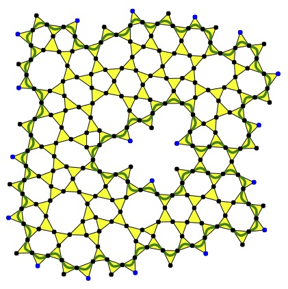 |
Anchored boundary conditions for locally isostatic networks,
with Louis Theran, Anthony Nixon, Mahdi Sadjadi, Brigitte Servatius and M.F. Thorpe.
Submitted.
|
| 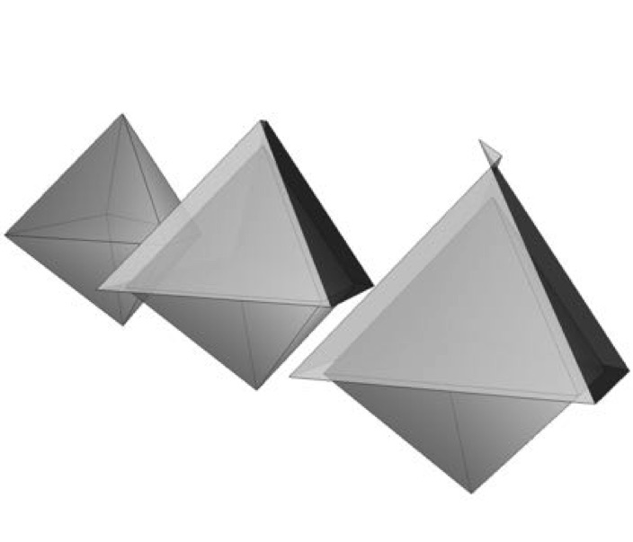 |
Exact face-offsetting for polygonal meshes,
with Daniel Hambleton.
To appear in the proceedings of ACADIA 2015.
|
| 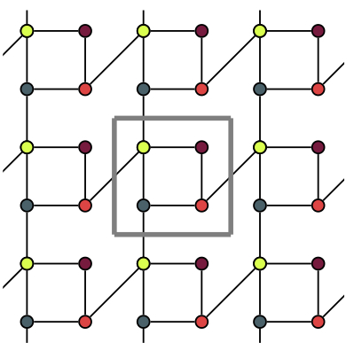 |
Inductive constructions for frameworks on a two-dimensional fixed torus,
Discrete and Computational Geometry, 54(1), 2015.
|
| 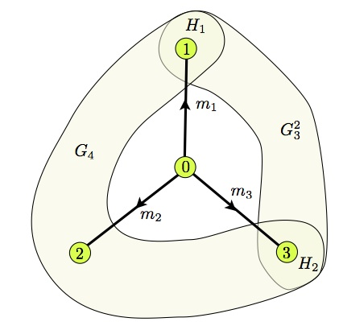 |
Periodic rigidity on a variable torus using inductive constructions,
with Anthony Nixon.
Electronic Journal of Combinatorics, 22(1), 2015.
|
| 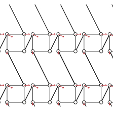 |
Geometric rigidity of graphs on the fixed torus,
with Brigitte Servatius and Herman Servatius.
Proceedings of the 24th Fall Workshop on Computational Geometry, 2014
|
| 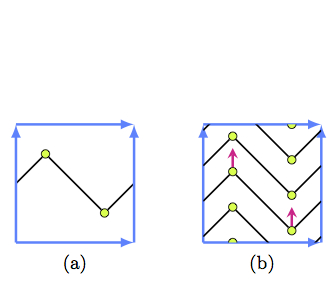 |
The rigidity of periodic frameworks as graphs on a fixed torus,
Contributions to Discrete Mathematics, 9(1), 2014.
|
| 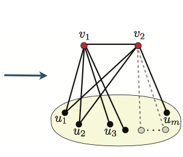 |
One brick at a time: a survey of inductive constructions in rigidity theory,
with Anthony Nixon.
Fields Communications Series, volume 70,
"Rigidity and Symmetry," a volume edited by Robert Connelly, Asia Weiss and Walter
Whiteley.
|
| 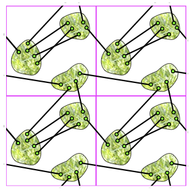 |
The rigidity of periodic body-bar frameworks on the three-dimensional fixed torus,
Phil. Trans. R. Soc. A 2014 372, 2013.
|
| 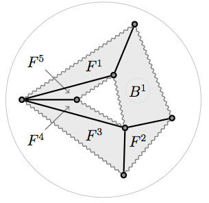 |
Swapping blocks and holes in spherical frameworks,
with Wendy Finbow-Singh and Walter Whiteley.
SIAM Journal on Discrete Mathematics, 26(1), 280 -- 304, 2012
|
| 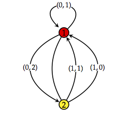 |
Finite motions from periodic frameworks with added symmetry,
with Bernd Schulze and Walter Whiteley.
International Journal of Solids and Structures, 48, 1711 -- 1728, 2011.
|
| 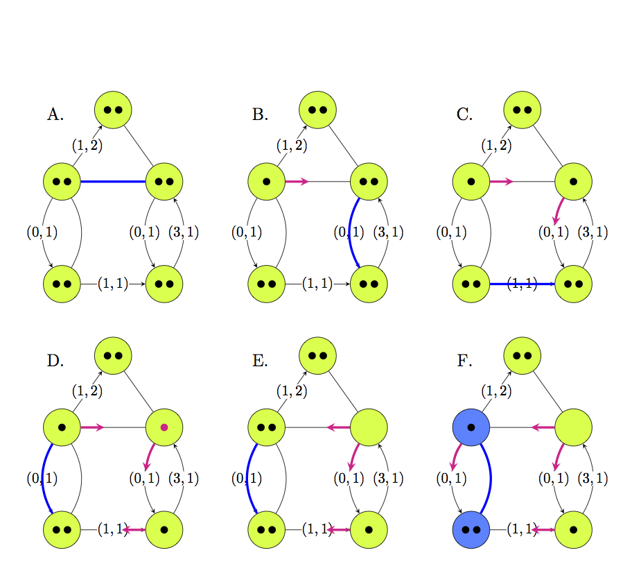 |
The Rigidity of Periodic Frameworks as Graphs on a Torus,
Ph.D. thesis, York University, May 2011.
|
| 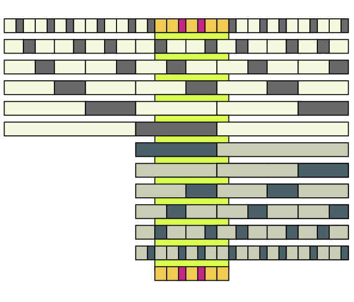 |
Non-Local Growth of Penrose Tilings,
Masters thesis, University of British Columbia, October 2005.
|
| 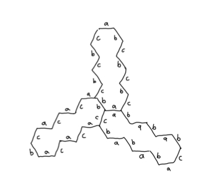 |
A survey paper on Conway's Tiling Groups
April 2004.
|
| 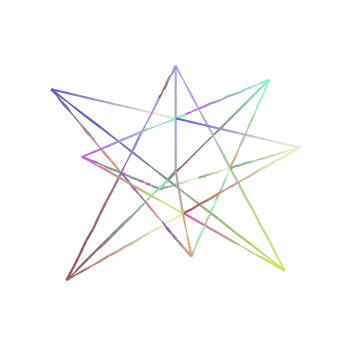 |
A survey paper on Spectral Graph Drawing
December 2004.
|
In the Winter of 2014 I taught at Worcester Polytechnic Institute:
Too Cool For School Art and Science Exhibition, Harbourfront Centre, Toronto. (Winter 2011)
Art Meets Science, York University, Toronto. (October 2009)
{kind=link}